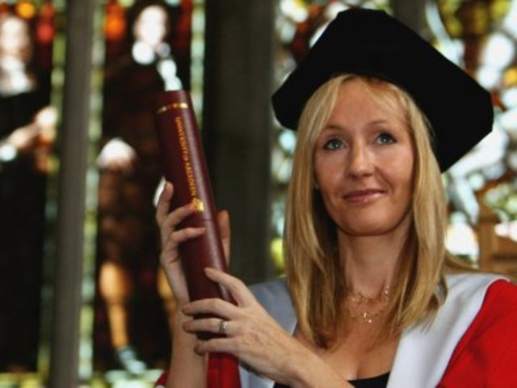
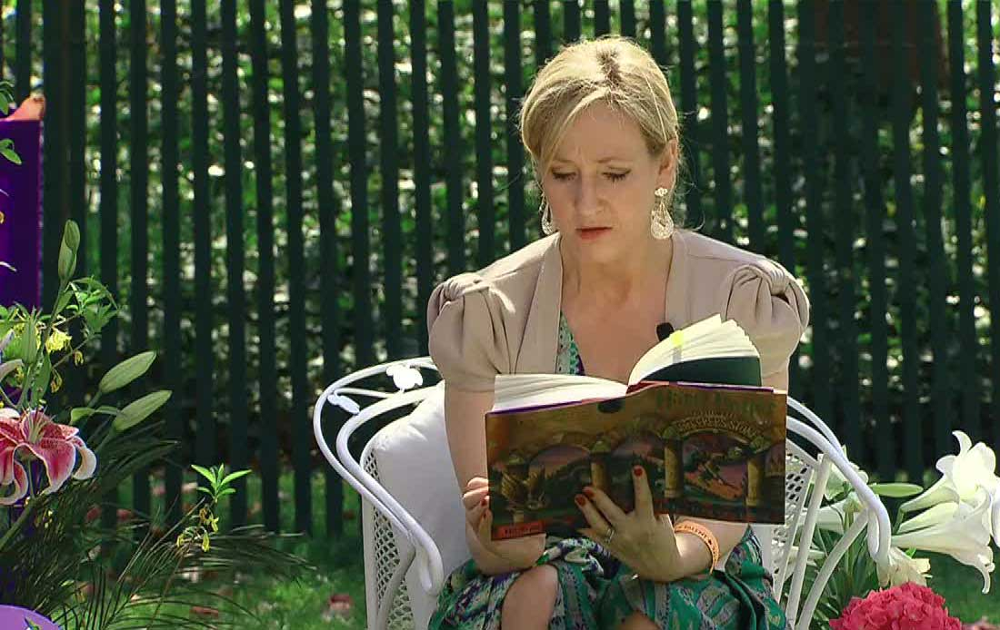

J.K. Rowling, the author of Harry Potter, is the first billionaire author. The "J" in her name stands for Joanne and the "K" stands for Kathleen, her paternal grandmother’s name. The publisher of Harry Potter requested Joanne to add her name as J.K. Rowling, because she believed that a book by an obviously female author won’t interest young boys.
Rowling came up with the idea of Harry Potter in 1990 when she was waiting for a delayed train. At that time, her mother had recently passed away, and according to Rowling, her mother’s death led her to make her novel’s hero suffer from the deaths of his parents. After the birth of that idea, Rowling continued to map out the rest of the seven books in the series. When she was done with the manuscript, she sent the first three chapters to several literary agents. One of them responded with a letter asking to see the rest of the books. The first publisher of Harry Potter was Bloomsbury Children’s Books who published the book in June 1997.
It is also believed that some of the characters including Ron and Dumbledore were based on people in J.K. Rowling’s life. Ron Weasley was based on her friend, Sean Harris. Harris also owned a turquoise Ford Anglia, the same car that Ron’s family owns in Harry Potter. Along with that, she agreed herself that Hermione is a caricature of her eleven-year-old self. This is probably the reason why according to the Pottermore quiz, Rowling is a Gryffindor.
Joanne Rowling was born at Yate General Hospital near Bristol on 31st July 1965. She grew up in Gloucestershire in England and in Chepstow, Gwent, in south-east Wales. Her father was an aircraft engineer, and her mother was a science technician. She also has a sister, Dianne Rowling, who is two years younger than her.
Rowling attended St. Michael’s Primary School in Winterbourne, and earned a BA in French and Classics at the University of Exeter in SouthWest England. After getting her degree, she moved to London and worked at several different places including a job as a researcher at Amnesty International.
In 1990, Rowling moved to Portugal to teach English. She met and married Jorge Arantes, a Portuguese journalist there. In 1993, Rowling’s daughter, Jessica, was born. Unfortunately, her marriage with Jorge Arantes ended in a divorce, and she moved to Edinburgh with her daughter. She worked on her first Harry Potter book while struggling to support her daughter Jessica and herself on welfare. After Rowling gained fame from Harry Potter, she married her second husband, Neil Murray. She had two kids with Murray, Mackenzie and David.
Rowling always loved to read. During her time at Exeter University, she read so widely that she was fined £50 for overdue books at the University’s library. Along with her love for reading, she also loved writing. She wrote her first book, about a rabbit named "Rabbit", when she was 6, and her first novel, about seven cursed diamonds and their owners, when she was eleven.
Along with writing the Harry Potter series, Rowling also wrote several other books too. She has written three companion volumes for Harry Potter, Fantastic Beasts and Where to Find Them, Quidditch Through the Ages, and The Tales of Beedle the Bard. Rowling published her first novel for adults, The Casual Vacancy in 2012. Some of the children’s books she wrote include I like You, Agents of S.U.I.T, Iceberg and The Windeby Puzzle.